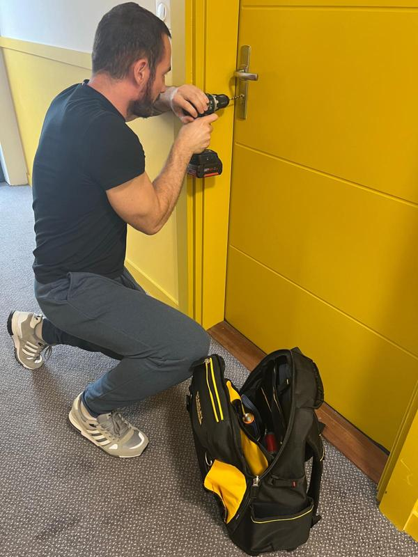

Serrurerie Colombes
Je me présente, Valérian Habillon, artisan serrurier domicilié sur Colombes. Interventions rapides, y compris en urgence, avec le soin d’un professionnel indépendant.
Prestations :
- Ouverture de porte (claquée, clé perdue, cassée…)
- Remplacement de cylindre et/ou serrure
- Blindage de porte
- Pose de poignées blindées
- Sécurisation après effraction
Tarifs dépannage
- Forfait ouverture porte claquée : 100€
- Forfait ouverture de porte fermée (perte de clé, dysfonctionnement de serrure, etc) : 150€ ( 180€ si protecteur )
- Forfait déplacement / diagnostic / intervention/ réparation : 130€
- Changement de cylindre/serrure : Sur devis immédiat.
- Forfait ouverture porte claquée : 100€
- Forfait ouverture de porte fermée (perte de clé, dysfonctionnement de serrure, etc) : 150€ ( 180€ si protecteur )
- Forfait déplacement / diagnostic / intervention/ réparation : 130€
- Changement de cylindre/serrure : Sur devis immédiat.
Ces tarifs ne prennent pas en compte les éventuels travaux supplémentaires engendrés par l'ouverture de la porte. Les interventions le soir et le week-end sont légérement majorées.
Tarifs travaux
- Changement de serrure encastrée type Vachette 5000 : à partir de 160€ selon la certification assurance
- Changement de serrure en applique 3 points simple : à partir de 330€ ( selon modèle, options et faisabilité )
- Blindage simple : 450€ en brut non peint / 750€ avec peinture epoxy, couleur au choix A poser obligatoirement avec une barre-pivot en fer plat afin de renforcer les gonds et facilitez l'ouverture de la porte avec le poids additionel dû au blindage : 290€.
- Changement de serrure carénée : à partir de 750€ selon modèle, options et faisabilité )
- Changement de serrure encastrée type Vachette 5000 : à partir de 160€ selon la certification assurance
- Changement de serrure en applique 3 points simple : à partir de 330€ ( selon modèle, options et faisabilité )
- Blindage simple : 450€ en brut non peint / 750€ avec peinture epoxy, couleur au choix A poser obligatoirement avec une barre-pivot en fer plat afin de renforcer les gonds et facilitez l'ouverture de la porte avec le poids additionel dû au blindage : 290€.
- Changement de serrure carénée : à partir de 750€ selon modèle, options et faisabilité )
Zone d’intervention : Colombes et alentours : 92, 93, 95, 78, Paris.
📞 07 44 43 69 03
📱 Contact possible via WhatsApp : 07 44 43 69 03
07 44 43 69 03
📱 Contact possible via WhatsApp :
07 44 43 69 03

SIRET : 82037989900025